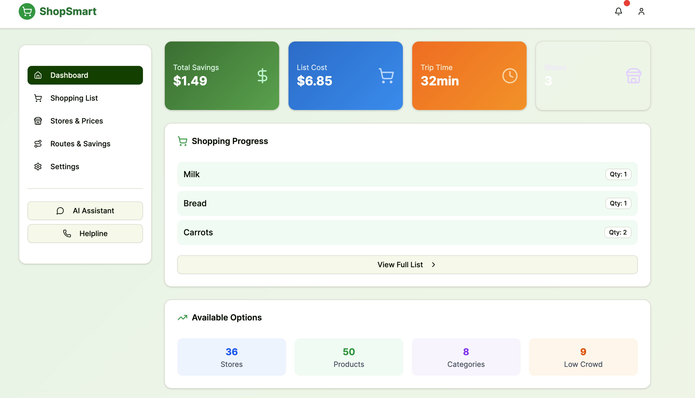
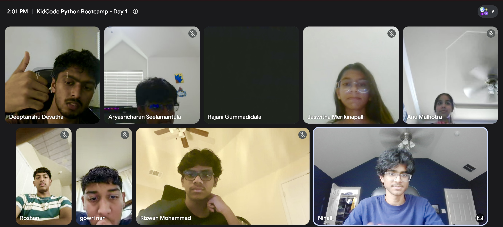

Open or download your current resume
The site includes your uploaded document so visitors can access it immediately while browsing your page.
A clean portfolio-style home page with direct access to resume, interests, research, and blog content. This layout includes image placeholders, layered motion, and smooth scroll reveals so you can keep the structure polished while adding your own details over time.
Each card below jumps directly to a main section so visitors can immediately browse your academic profile, current interests, research direction, and writing.
Keep your experience, education, achievements, and downloadable resume in one structured place.
Open section → 02 / InterestsHighlight favorite topics, communities, skills, and extracurricular activities.
Open section → 03 / ResearchShowcase themes, papers, experiments, labs, or long-form ideas with room for visuals.
Open section → 04 / BlogCreate a home for essays, updates, notes, and future posts with a magazine-style layout.
Open section →This area is ready for your formal achievements and also links directly to the resume file already placed in the folder.
The site includes your uploaded document so visitors can access it immediately while browsing your page.
Add degree information, institution, coursework, and milestones here.
Summarize impactful technical work, publications, or thesis directions in concise language.
Include organizations, mentoring, student communities, or outreach contributions.
Use this card to describe the role, scope, methods used, and measurable outcomes.
List languages, frameworks, research methods, software tools, and domain strengths.
Use this section to show personality, long-term interests, interdisciplinary themes, and the communities or ideas you care about.
Highlight student groups, volunteering, outreach, hackathons, or communities where you contribute and learn.
This section is structured for projects, publications, experiments, or thesis-oriented work, with visual placeholders and room for concise summaries.
Add a short overview of the problem area, why it matters, and the methods or frameworks you are using to investigate it.
Use this for a publication summary, a capstone project, or a lab collaboration.
Describe a system, prototype, or experiment setup with key findings or lessons.
Outline the next question you want to pursue or the extension of current work.
First-hand accounts from projects, hackathons, and learning experiences.
I've decided to spend this year trying to do real machine learning research, and I want to write about it as it happens rather than only after the fact. I have no formal research experience — until now, "research" for me has meant reading other people's papers, not writing my own. So the first few weeks of this project have mostly been about learning how research problems get made in the first place, not about writing any code.
I started meeting regularly with Joe Xiao, a PhD student who agreed to mentor me on this project, and that alone has changed the pace of things. Having someone to push back on half-formed ideas in real time is worth more than another week of solo reading. This week's conversations helped me go from "healthcare NLP, broadly" to something much more specific.
This week was pure reading, and it was the first time the project started to feel like it had real technical bones rather than just a motivating story. "Discourse coherence" turns out to be a whole subfield with its own vocabulary, and a lot of it maps surprisingly cleanly onto the kinds of breakdowns that get described anecdotally in dementia case studies.
Dataset search this week, and I think I found the right one: the DementiaBank Pitt Corpus. It's a collection of transcribed speech samples from participants completing a handful of standardized elicitation tasks — most notably the "Cookie Theft" picture description task, along with fluency, recall, and sentence-repetition tasks — collected from both a dementia group and a healthy control group. Critically for what I want to do, many participants were seen across multiple visits over time, with cognitive assessment scores (including MMSE) recorded at each visit.
This week was almost entirely plumbing, and I mean that in the least glamorous sense possible: getting raw transcript files and a metadata spreadsheet into a single clean table I can actually build features on top of. It is not exciting to write about, but it's the part of research nobody tells you takes as long as it does.
Handcrafted lexical-overlap features (how many words two consecutive sentences share) are a reasonable first pass at coherence, but they have an obvious blind spot: two sentences can be about the exact same thing while sharing almost no vocabulary at all ("the woman is drying dishes" vs. "she's wiping plates with a towel"). If I only measure literal word overlap, I'll systematically miss semantic coherence — coherence at the level of meaning rather than surface form.
I lost most of two days this week to environment setup, which is not something I expected to be writing about in a research blog, but it felt worth documenting because it's such a normal part of doing this kind of work. Coreference resolution — figuring out that "she," "the woman," and "her" in a transcript all refer to the same entity — needs a fairly heavy transformer-based model, and getting a working coreference pipeline installed alongside the rest of my existing packages caused enough dependency conflicts that I ended up isolating it into its own virtual environment entirely, separate from the environment I use for everything else. Not elegant, but it works, and I'd rather have a slightly ugly setup than lose another day to it.
After weeks of feature engineering, I finally trained a model. Since the whole premise of this project involves patients with multiple visits over time, a sequence model felt like the obvious first choice — I built an LSTM that takes a patient's visit history as a sequence of feature vectors (handcrafted coherence features plus SBERT embeddings per visit) and predicts the MMSE score at a future visit.
I trained a Random Forest regressor on the same feature set the LSTM had access to — handcrafted discourse features plus SBERT embeddings, flattened per patient rather than fed in as a sequence — and it outperformed the LSTM by a meaningful margin, landing around R² ≈ 0.4 on cross-validation. That's still far from a result I'd call strong, but it's a real improvement over the neural network's ~0.44 validation score once you account for the fact that the LSTM's number came from a single validation split while the Random Forest number is a cross-validated estimate, and the Random Forest got there with a small fraction of the tuning effort.
With the Random Forest baseline in place, I spent this stretch trying to squeeze more signal out of the longitudinal structure of the data rather than adding entirely new feature families. The instinct behind this: I've been treating each visit somewhat independently, but the whole point of longitudinal data is that a patient's history should inform the prediction, not just their most recent snapshot.
Switched the modeling backbone from Random Forest to LightGBM, a gradient-boosted decision tree library. The core difference from Random Forest is how the trees are built: Random Forest trains many trees independently on bootstrapped samples and averages them, while gradient boosting trains trees sequentially, where each new tree is fit to correct the errors (residuals) of the ensemble built so far. In principle, this lets the model capture more subtle feature interactions and generally squeezes more performance out of tabular data — at the cost of being more sensitive to hyperparameters and more prone to overfitting if you're not careful.
I flagged this concern a couple weeks ago and finally sat down to check it properly, and it turned out to be a real problem, not a false alarm. My cross-validation setup had been splitting the dataset at the level of individual samples (patient-visits), not at the level of patients. Since many patients in this cohort have multiple visits, that means it was entirely possible — and, once I checked, actually happening — for one visit from a given patient to land in the training fold while another visit from that same patient landed in the validation fold.
With patient-grouped cross-validation now in place as an honest baseline, I finally did the thing I'd been putting off since August: incorporated the clinical metadata that comes bundled with the Pitt Corpus alongside the speech data. Specifically, I added each patient's entry MMSE (their cognitive score at their first recorded visit), Blessed Dementia Scale score (a measure of functional impairment in daily activities), CDR (Clinical Dementia Rating), NYU and Mattis battery scores, and their baseline diagnosis category (dementia, control, or otherwise).
While setting up the ablation study I'd planned last time, I went digging into why the "entry MMSE" feature — which I expected, based on everything I understand about this problem, to be by far the single most predictive feature available — wasn't behaving the way I expected in early feature-importance checks. It turned out to be almost inert, which didn't make sense.
With the entry-MMSE bug fixed and the rest of the clinical feature joins audited and confirmed correct, I ran a proper permutation-importance analysis across all five cross-validation folds. The method: for each fold, take the trained model, measure its validation R², then shuffle one feature column at a time (breaking that feature's relationship to the target while leaving everything else intact) and measure how much R² drops. A bigger drop means the model was relying on that feature more. Repeating the shuffle multiple times per fold and averaging cuts down on noise from any single unlucky shuffle.
Ran the ablation study I've been planning since November, comparing four feature configurations under identical patient-grouped 5-fold cross-validation: linguistic (handcrafted) features alone, SBERT embeddings alone, clinical features alone, and combinations of all three. The results settle the question from a few weeks ago, at least as far as this dataset can settle it.
Most of this stretch was incremental tuning, and in the spirit of documenting the real process rather than just the wins, I want to write down what didn't work as much as what did, because the list of rejected ideas ended up being long.
I set aside a patient-grouped held-out test set this week — a slice of patients that took no part whatsoever in feature selection, hyperparameter tuning, or fold-ensemble training. Everything up to this point has been evaluated purely through cross-validation, which is a reasonable way to make modeling decisions on a small dataset but leaves open the possibility that repeated tuning decisions, made by me, looking at CV scores over and over across months, have quietly overfit to the CV folds themselves. A genuinely untouched test set is the only way to check that.
Almost a full year after I first started reading about domains, tasks, targets, and data, I sat down this week to start turning all of this into an actual manuscript, and immediately ran into a problem I hadn't anticipated: I don't really know how to write a research paper. I know how to run experiments, keep notes, and argue with myself about whether a result is real. I don't have much practice putting that into the specific, conventionalized shape a paper is supposed to take.
Spent this stretch actually writing prose for the first time, starting with Methods and Results rather than the Introduction, on Joe's advice — apparently it's common to draft these sections first since they're the most mechanical and the least dependent on getting the framing exactly right, and writing them first tends to clarify what the Introduction and Discussion actually need to set up and explain.
The Discussion section has taken longer to draft than Methods and Results combined, and I think that's because it's the section where I actually have to take a position rather than just report what happened. It's easy to describe a permutation importance table. It's harder to write a paragraph honestly explaining what it means that clinical features account for the overwhelming majority of predictive power, without either overselling the speech features' contribution or undermining the motivation for the entire project.
I finished assembling the first complete draft of the manuscript today — Introduction, Methods, Results, Discussion, and Conclusion, all in one document, for the first time since I started this project fourteen months ago. It's rough. There are sentences I'll rewrite, a couple of figures that need to be redone at higher resolution, and at least one Methods paragraph Joe already flagged as too dense. But it's a real draft of a real paper, built entirely from work I did and understood, and I want to take a minute to look back at how it got here before diving into revisions.
After day two ran into more material than an hour could hold, I rebuilt the lesson around just four related ideas: booleans, comparison operators, and, and or. The slower pace changed the room: more volunteers, more students explaining things to each other, and a third grader who worked out and vs. or on her own.
Booleans, if statements, for loops, and while loops: four big ideas for students who'd only just started learning to code. Attendance held steady from day one, but participation dropped as the pace outran the class. Here's what that taught me about the difference between covering material and actually teaching it.
Twelve students joined our first Google Meet coding session. We installed Python, covered data types, variables, and user input, and worked through two exercises together. By the end, everyone had working code. Here's how the first class went.
I started a cross-communal coding initiative bringing together students from Avondale, The Heights at Westridge, and Ridgeview at Panther Creek. The first meeting had nobody knowing each other and experience levels ranging from zero to two-plus years. Here's what actually happened—and why it felt like the right kind of start.
Over four intense days, our team built ShopSmart—an app that finds the cheapest, fastest, or most eco-friendly multi-store shopping route. We placed first out of all submissions, earning $100 and five .xyz domains. Click to read the full story.

The first actual class had been on my mind for weeks. There's a gap between planning a curriculum and teaching it for the first time, and Saturday morning was when that gap closed.
I logged into Google Meet a few minutes early. Students started joining quickly—within a few minutes, twelve had made it in: Anuk, Jaswitha, Oviya, Sabera, Sumirah, Purnima, Arya, Rajani, Ann, Saji, Gowri, and Gowtham. Attendance was better than I'd expected, and almost everyone came prepared and ready to work.

The class as it looked from my end—twelve students on, cameras up, ready to start.
The first order of business was installation. Getting Python and Visual Studio Code running across twelve different computers, with different operating systems and permission settings, never goes exactly to plan. I'd set aside the first part of class specifically for this. A few students ran into issues—one had a permissions error during installation, another's VS Code wasn't detecting Python at all. While I walked through the steps on screen, other students who'd already finished setup helped troubleshoot. Both problems got resolved. We had everyone writing code within about twenty minutes.
We started with print() statements—the most direct way to confirm that Python is running and responding to what you type. Students wrote their first programs, ran them, and a few immediately started changing the text to see what else they could get Python to display. That instinct to experiment before anyone tells you to is a good sign early on.
From there, we covered data types: strings, integers, floats, and booleans. I explained why they matter with a concrete example—you can add two numbers together without any trouble, but if you try to combine a number and a piece of text the same way, Python stops and tells you something's wrong. Understanding that different kinds of data behave differently is one of those foundational ideas that prevents a lot of confusion later.
Variables came next. I described them as labeled containers—a place to store information so a program can refer to it again later without retyping it each time. We worked through several examples together, and I asked students to predict what would be printed before we actually ran the code. Getting them to think through what Python is doing at each step—rather than just watching it happen—made a noticeable difference in the follow-up questions.
The piece that clicked most visibly was input(). Up until that point, every program students had written just displayed something fixed. input() means the program can ask the user a question and do something with whatever answer it gets. That shift—from a program that only displays output to one that can actually respond—is when Python stops feeling like an exercise and starts feeling like you're building something real.
The first exercise was intentionally straightforward: write a program that prints your name, your age, and what you're most excited to learn during the bootcamp. The goal was to make sure everyone had print() working and could use it to display several things in sequence. Students shared their outputs aloud, which made for a good few minutes—hearing what each person wanted to learn gave the class a clearer picture of what everyone was working toward.

Students working through the exercises during class.
The second exercise introduced input(). Students wrote a program that asks the user for their name and age, then displays both back. It's a small program, but it required pulling together several things we'd just covered: storing input in a variable, then using that variable in a print() statement. Syntax errors came up—missing quotes, a mismatched parenthesis, a typo in a function name. We walked through each one as a group. I made a point of saying directly that finding a bug and fixing it is the same work as debugging real code. Getting comfortable with that process early is worth the time.
By the end of class, everyone had both programs running.
Before we wrapped up, I gave everyone a challenge to work on before our next session on Saturday, July 4: can your program tell the user how old they'll be in five years? It builds on everything we covered—input(), variables, and a simple arithmetic step. I want students to work through it themselves rather than waiting to be walked through it in class. Coming back with something they tried, even if it doesn't quite work yet, is more useful than coming back having done nothing.
A few students kept their cameras off early on, which is normal the first time. I made a point to call on different people throughout the session rather than defaulting to whoever was most visibly engaged. When someone wasn't confident about an answer, I encouraged them to guess anyway—being wrong out loud is easier when the room makes that okay.
The dynamic started shifting once students began helping each other. When someone ran into an installation issue, another student who'd already worked through something similar jumped in with what had worked for them. That's not something you can plan for—it just happens when people are paying enough attention to what's going on around them.
A few syntax mistakes turned into useful teaching moments. One student had forgotten to close a parenthesis; another had a quote mismatch that was hard to spot at first glance. We stopped and traced through each one rather than just correcting it and moving on, because reading an error message and working backward to its cause is exactly the kind of thinking that makes someone better at programming over time. I made sure to say that out loud—debugging isn't a sign that something went wrong, it's just part of writing code.
I spent a good amount of time building the curriculum before this class—thinking through the pacing, deciding what to cover first and what to save for later. Running the actual session made it feel less like preparation and more like teaching. That transition is what I'd been working toward.
Watching students write their first Python programs and have them actually work is a different thing from anticipating that it'll go well. The class confirmed the foundation is there. We'll build on it Saturday.